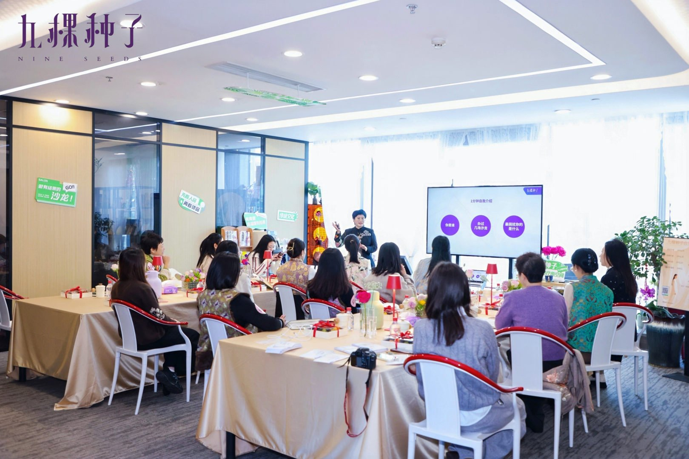

九棵种子的起点，来自一个朴素的观察：很多想认真做事的人，不缺能力，缺的是一个能接住自己的场域。他们在关系里慌、在表达里卡、在生意里孤军奋战。
于是我们做了一件笨但正确的事：把沙龙当作一种产品来打磨，办完一次不会就散。让人在场里被看见、被安顿，让信任和生意从关系里自然长出来。这，就是"九棵种子"名字的寓意：把一颗颗种子，种回自己的土壤里。
九棵种子家文化沙龙，是一个以家文化为内核、以沙龙陪跑为交付方式的品牌。我们相信，创业者最稳的底座，是把自己与关系安顿好。根稳了，生意才稳。
九棵种子的起点，来自一个朴素的观察：很多想认真做事的人，不缺能力，缺的是一个能接住自己的场域。他们在关系里慌、在表达里卡、在生意里孤军奋战。
于是我们做了一件笨但正确的事：把沙龙当作一种产品来打磨，办完一次不会就散。让人在场里被看见、被安顿，让信任和生意从关系里自然长出来。这，就是"九棵种子"名字的寓意：把一颗颗种子，种回自己的土壤里。

这是九棵种子所有沙龙与陪跑的底层信条。商业排第一，是因为先活下来、把生意跑通，温度和关系才走得远。
九棵种子的交付，由一支跨方向的团队共同完成。
九棵种子家文化沙龙联合创始人、品牌操盘手与沙龙陪跑导师。带团队完成 400+ 场沙龙、陪跑近 60 位主理人，是把方法论从现场里"长"出来的人。
主导绘画与心力板块，带曼陀罗、树木画等表达性内容，让人在涂画里慢下来、把注意力收回到自己身上。
九棵种子创始人，主导传统文化与祭祖沙龙，把控文化传承的庄重感与边界，是九棵种子"根"的那一端。